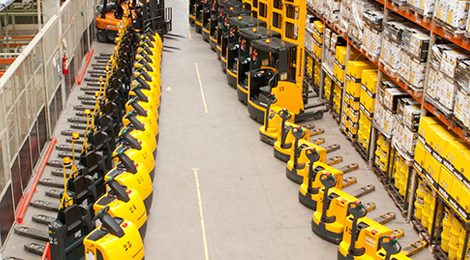

Sobre o Grupo OVD
Temos mais de 55 anos de experiência no mercado, marcados por grandes investimentos no desenvolvimento de produtos e aperfeiçoamento de nossos processos logísticos. Por isso, oferecemos o que há de mais moderno e eficiente para a execução de trabalhos profissionais e industriais em produtos, máquinas, utensílios e equipamentos.
Contamos hoje com um Centro Administrativo, oito Centros de Distribuição e mais duas filiais, localizadas em regiões estratégicas do país para atender com máxima eficiência e agilidade todo o território nacional.
Capital Humano
Somos uma empresa sólida que gera oportunidades de crescimento e desenvolvimento para nossos profissionais. Contamos com mais de 1.100 colaboradores e aproximadamente 900 representantes comerciais com um só objetivo, construir juntos uma empresa cada dia melhor e mais reconhecida por sua excelência e qualidade.
Nossos produtos
Comercializamos milhares de itens dos melhores fornecedores do mercado, entre ferragens, ferramentas, acessórios, materiais elétricos e hidráulicos, e equipamentos para construção civil e indústria.

CONHEÇA NOSSOS PARCEIROS